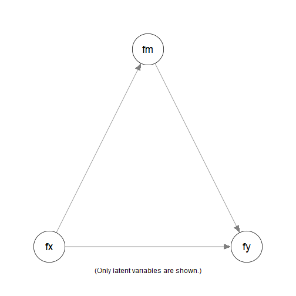
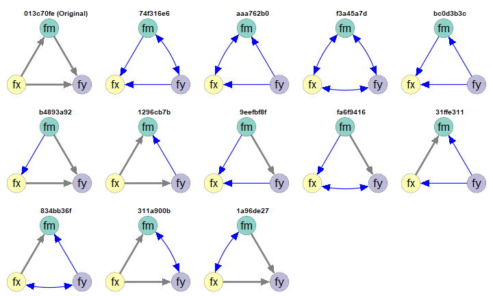
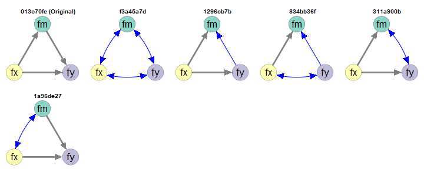
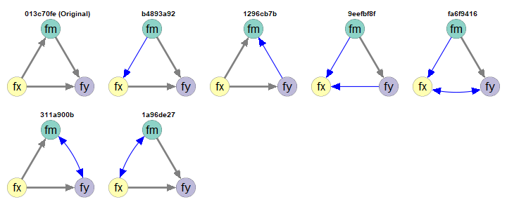
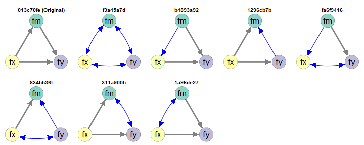
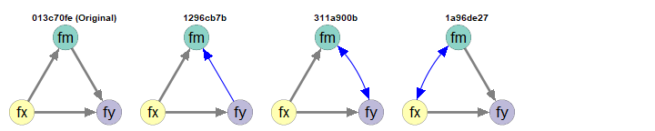

Workflow Demo: 3 Latent Variables
2026-07-15
demo_lav_3.RmdIntroduction
This article is part of a series of articles to demonstrate how to use semeqmodels to identify models empirically equivalent to a target model, called the original model.
NOTE: To make articles in this series self-contained, some sections are repeated across articles.
Scope
A simple mediation model will be used as an example. This model is
trivial, but is simple enough to illustrate how to use
semeqmodels.
Original Model
Suppose this the original model we fitted to dataset
data_test_3_factor_3_item (installed with the package):
library(semeqmodels)
round(head(data_test_3_factor_3_item), 2)
#> x1 x2 x3 m1 m2 m3 y1 y2 y3
#> 1 -2.13 -1.21 -0.05 1.88 0.99 0.40 3.24 2.23 1.44
#> 2 -1.77 -0.91 -0.23 -0.02 0.12 -0.33 0.85 -0.71 -0.72
#> 3 -0.54 0.69 -0.10 -0.33 -0.34 2.31 -1.35 -0.02 0.76
#> 4 -1.72 -1.04 0.07 0.11 -0.13 -0.28 -0.49 1.77 0.64
#> 5 -0.44 -0.41 -0.12 -0.34 -0.27 0.57 2.43 -0.11 -0.20
#> 6 1.42 1.24 0.78 0.47 -0.38 1.72 0.68 1.22 -1.16
Simple Mediation Model
This is a model:
mod <-
"
fx =~ x1 + x2 + x3
fm =~ m1 + m2 + m3
fy =~ y1 + y2 + y3
fm ~ fx
fy ~ fm + fx
"This is the lavaan results for the model:
library(lavaan)
fit <- sem(
model = mod,
data = data_test_3_factor_3_item
)
fit
#> lavaan 0.7-1.3032 ended normally after 41 iterations
#>
#> Estimator ML
#> Optimization method NLMINB
#> Number of model parameters 21
#>
#> Number of observations 200
#>
#> Model Test User Model:
#>
#> Test statistic 24.970
#> Degrees of freedom 24
#> P-value (Chi-square) 0.407Empirical Equivalence
Suppose we are would like to find some models that are empirically equivalent to this model:
In this package, two models are defined to be empirically equivalent if the following conditions are met:
They have the same model degrees of freedom.
Their absolute differences on selected fit measures are equal to or smaller than a user-defined tolerance.
See this section on a discussion of equivalence
We will start the demonstration using model , with a tolerance of 0.00001.
Generating Empirically Equivalent Models
To generate models that are empirically equivalent to a fitted model,
we can simply call eq_models() and set
original_model to the output of lavaan:
library(semeqmodels)
out <- eq_models(
original_model = fit
)The search can be customized if necessary. Please refer to the help
page of eq_models() for available options.
This is the text output:
out
#>
#> Number of models: 13
#>
#> The models:
#>
#> Model
#> 1 74f316e6
#> 2 aaa762b0
#> 3 f3a45a7d
#> 4 bc0d3b3c
#> 5 b4893a92
#> 6 1296cb7b
#> 7 013c70fe
#> 8 9eefbf8f
#> 9 fa6f9416
#> 10 31ffe311
#> 11 834bb36f
#> 12 311a900b
#> 13 1a96de27
#>
#> NOTE: 'default' names are used. Call 'print()' and add 'names_to_use =
#> "long"' to use the long descriptive names, if available, for the
#> models.The default names are generated to uniquely identify the models. Treat them as identification numbers. They are useful IDs because they are short. However, it is much easier to examine the models by drawing them.
The function eq_chisq() can be used to extract the model
s,
to verify that they have model
s
close to the that of the original model:
eq_chisq(out)
#> 74f316e6 aaa762b0 f3a45a7d bc0d3b3c b4893a92 1296cb7b 013c70fe 9eefbf8f
#> 24.97025 24.97025 24.97025 24.97025 24.97025 24.97025 24.97025 24.97025
#> fa6f9416 31ffe311 834bb36f 311a900b 1a96de27
#> 24.97025 24.97025 24.97025 24.97025 24.97025
fitMeasures(fit, "chisq")
#> chisq
#> 24.97These models also have model degrees of freedom equal to that of the original model:
eq_df(out)
#> 74f316e6 aaa762b0 f3a45a7d bc0d3b3c b4893a92 1296cb7b 013c70fe 9eefbf8f
#> 24 24 24 24 24 24 24 24
#> fa6f9416 31ffe311 834bb36f 311a900b 1a96de27
#> 24 24 24 24 24Drawing the Models
To draw the models, the function partables_plots() can
be used. It used the function semPlot::semPaths() from the
semPlot package to draw the model. Therefore, basic
knowledge of semPlot::semPaths() is required.
To draw the model, we need a common layout, in the form of a matrix of names:
# Set the layout of the plots
m <- matrix(
c( NA, "fm", NA,
"fx", NA, "fy"),
nrow = 2,
ncol = 3,
byrow = TRUE)
m
#> [,1] [,2] [,3]
#> [1,] NA "fm" NA
#> [2,] "fx" NA "fy"We can then generate the plots:
p <- partables_plots(
out,
original_model = fit,
structural = TRUE,
layout = m,
label.cex = 1.8,
sizeLat = 11,
edge.width = 5,
asize = 5
)We can then call plot() to plot the models. By default,
they will be drawn one by one. To draw them in a grid, use the arguments
ncol and nrow:
plot(
p,
ncol = 5,
nrow = 3,
title_adj = 2
)
Empirically Equivalent Models
The model labelled Original is the original model. The
other models are empirically equivalent to this model in this
dataset.
By default:
Paths or covariances different form the original model are colored.
Covariances are displayed using curves.
There are other ways to customize how the models are drawn. Please
refer to the help page of plot.partables_plots().
Filter the Models
The package semeqmodels has functions for selecting
models, listed here.
They can also be used to filter the output of
partables_plot(). Some of them are demonstrated below.
fx Must Not Be a DV (y-variables)
Suppose that we have reasons to argue that fx cannot be
an outcome of any other variables in the model. For example,
fx is measured one month before the other variables.
We can use must_not_be_y() to specify variables that
cannot be a “DV.”
p1 <- p |>
must_not_be_y(
vars = "fx"
)
plot(
p1,
ncol = 5,
nrow = 2,
title_adj = 2
)
fx Must Not Be a y-Variable
Note: A variable is a “DV” if it appears as the outcome of at least one other variable. Therefore, a mediator is also a DV.
fy Must Be a DV (y-variables)
Suppose that we have reasons to argue that fy must be an
outcome of at least one other variable.
We can use must_be_y() to specify variables that must be
a “DV.”

fy Must Be a y-Variable
Must Not Have Any Paths from fy to fx
Suppose that, theoretically, fy cannot have any effect
on fx, directly or indirectly. We can use
must_not_have_paths().
p3 <- p |>
must_not_have_paths(
y_on_x = "fx ~ fy"
)
plot(
p3,
ncol = 5,
nrow = 2,
title_adj = 2
)
No Paths from fy to fx
Chaining the Selections
The selectors can be chained together using |>.
p5 <- p |>
must_have_paths(
y_on_x = "fy ~ fx"
) |>
must_not_be_y(
vars = "fx"
)
plot(
p5,
ncol = 5,
nrow = 1,
title_adj = 2
)
Chained Filter
Final Remarks
Customize the Search
There are many other ways to customize the search and the plots. Please refer to the corresponding halp pages for details.
Demonstrations of other models and cases can be found in the other demonstration articles
Equivalence-In-Principle and Empirical Equivalence
The concept of mathematically equivalence models, or two models being equivalent in principle (Lee & Hershberger, 1990), has a long history in the literature on structural equation modeling Williams (2012). Two models are considered to be mathematically equivalent if they necessarily imply the same covariance matrix regardless of the data. There are methods to generate them and tools to generate them automatically (e.g., Lee & Hershberger, 1990).
Our definition of empirical equivalence is similar to empirical occurrence of equivalence (EOE, Lee & Hershberger, 1990). However, we include the requirement of equal degrees of freedom: two models must also be equal in parsimony. We also allow for the possibility of using any fit measures deem appropriate (e.g., CFI, RMSEA), and also the use of tolerance values that are appropriate for a situation.
Although our focus is on empirical equivalence, two models that are mathematically equivalent in the conventional sense are necessarily empirically equivalent. Note that the reverse is not true: two models that are empirically equivalent are not necessarily mathematically equivalent.
Nevertheless, when the tolerance is set to be very small, the models identified, though not necessarily, are likely to be mathematically equivalent. Therefore, the package can also be used to identify models that are likely mathematically equivalent.